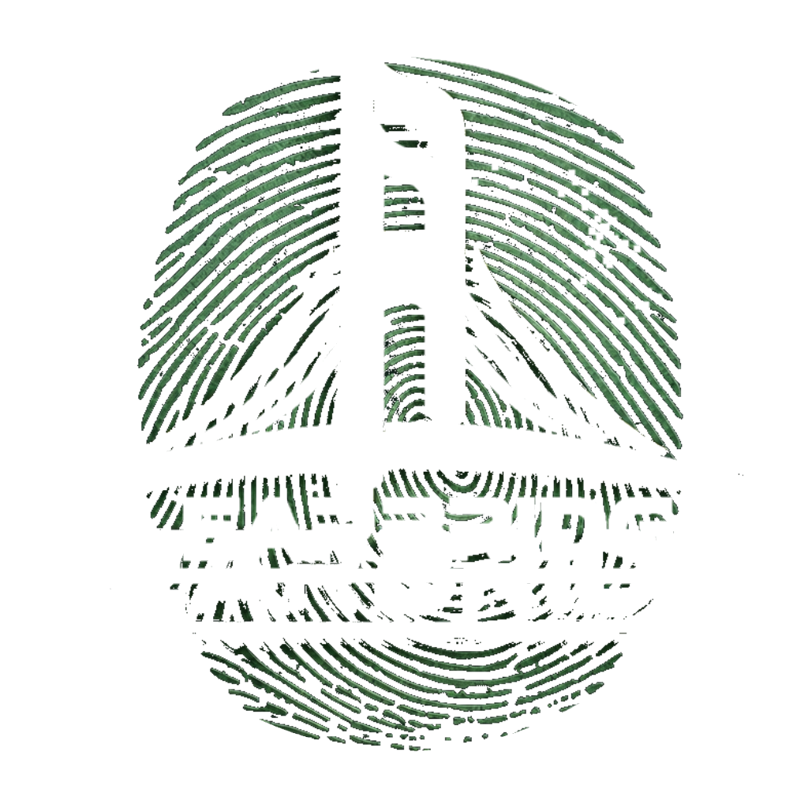

ClearBridge is mobile police clearance built for the worker — not the employer. Capture your fingerprint from your own phone with a simple front-facing scan, skip the PostNet trip, and verify yourself. We're in early beta, and the workers testing it are shaping how it works.
Every other platform verifies workers for employers. We give workers the power to verify themselves.
The goal: capture your fingerprints from your own phone. No police station, no PostNet, no half-day off work. That's what beta testers are helping us nail.
Our own front-facing capture pipeline turns a phone camera into a real fingerprint scanner — built to hold up in real hands, real light and real conditions. That's the part we're proving in beta.
Every tester's feedback changes what we build next. If the capture is clumsy or a step is confusing, we want to hear it — before launch, not after.
This is the part beta testers try out. No payments, no certificates yet — every capture trains the model that will power real clearances at launch. The capture has to work for real hands, real phones and real lighting, and that's exactly what we're refining now.
Lay your thumb flat on a dark surface and hold the phone directly above it, camera pointing straight down. Hold still — when the circle turns green, it captures itself. A few seconds, no buttons to press.
Fill the frame with your thumb so the camera locks onto the ridges — not the background. Sharp ridges, no blur.
Bright, even light works best. Avoid harsh glare and deep shadow — both wash out the ridge detail.
Hold still for a moment once it's in frame. Don't rush it — jitter resets the lock, so let it settle.
Every front-capture session you run during beta earns ClearCoin. When the production version launches, you'll redeem it against your first real police clearance — you tested it, so you save on it.
ClearCoin is a beta thank-you, not a currency. It only converts to a discount when the production version goes live.
Your work speaks for itself — now make it official. Join the beta, be among the first South African workers to test ClearBridge, and the feedback you give goes straight into what we build next.
No pricing yet — we'll only talk cost once the tech earns it.